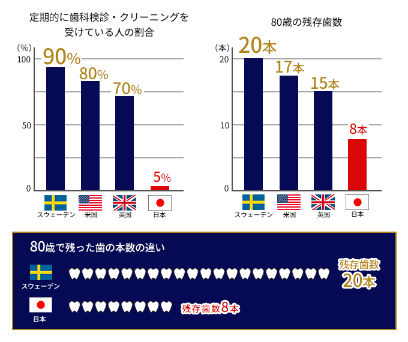

再治療ゼロを目指して―予防処置
治すのではなく、予防のために歯科医院へ通う
多くの患者様は、症状が出てから歯医者に来院されます。しかし、自覚症状が出ている頃にはもう手遅れのケースが多くあります。本来は悪くなってから治療するよりも、虫歯ができない、歯周病が発症・進行しないような口腔内環境を作り、しっかりと予防することが大切です。
また、お口の環境は、治療した直後の状態がずっと保たれるわけではなく、年を重ねるごとに変化します。再治療ゼロを目指すことはもちろん、もし再治療が必要になった場合でも最小限の治療で済むよう、日々のメンテナンスは必要不可欠です。
藤沢の歯医者、玉木歯科医院では、歯医者とは“健康のためにお手入れをする場所”でありたいと考えています。患者様一人ひとりのお口の状態に合わせた、オーダーメイドの予防処置をご提供しております。
何歳になっても健康な歯を残す

日本人は、予防の概念が十分に浸透していないこともあり、先進国の中でも残存歯数が極端に少ないのが現状です。予防歯科先進国であるスウェーデンでは、定期的に歯科検診・クリーニングを受けている人の割合が90％を超えていますが、日本では5％と予防に対する意識に大きな差があることが分かります。また、定期的に歯医者に通い、メンテナンスを行うかどうかで80歳の時に残っている歯の数にも大きく影響を及ぼします。
歯医者とは、「虫歯や歯周病にならないよう、健康な歯を維持するところ」と考え、予防処置を受ける習慣を身につけることが、将来のお口の健康を保つ上で重要なことなのです。
健康を保つために重要なこと
自分の“口腔内環境”を知る
ただ単に歯の治療を行うだけではなく、お口の中全体の健康状態を知る必要があります。唾液の性状を確認する唾液検査や、虫歯原因菌・歯周病原細菌をみる顕微鏡検査などを行うと、お口の中の傾向を知ることができます。そこから自分の食生活や暮らしについて意識し、改善していくことで、お口の環境も変わりより健康なお口を保つことができるようになります。
プロフェッショナルケアとホームケア
定期的に歯科医院に通いプロフェッショナルケアを受けることにあわせて、ご自宅で行うホームケアを怠らないこともポイントです。どちらも続けることで、今の健康状態をできる限り長く維持していくことができます。正しい知識、確かな技術を持った歯科衛生士による指導を受け、自分自身でも正しい歯磨きの方法や補助的清掃器具を活用していきましょう。
当院の予防処置の特徴
一人ひとりのお口に合わせたオーダーメイド治療
当院では、患者様ごとにオーダーメイドの予防処置をご提供しています。口腔内の状況は、唾液の性状や虫歯原因菌・歯周病原細菌の量など人により異なります。だからこそ、一人ひとりのお口に合わせたオーダーメイドの処置が必要です。様々な検査をして口腔内の状況を把握した後、歯面や歯肉を傷つけないようマイクロスコープや高倍率のルーペなど様々な精密器具を用い、プラークや歯石を確実に除去するように治療しています。
実際のマイクロスコープの映像
日本歯周病学会専門医・指導医によるリスクコントロール
患者様のお口の環境がどんなリスクを持っているのか細かく診断し、それぞれにあった方法で治療・整備することによって、虫歯や歯周病になりにくい口腔内環境を整えていくことができます。当院では、日本歯周病学会専門医・指導医によってリスクコントロールを行っています。日本歯周病学会専門医・指導医は、お口の環境を整えるスペシャリストです。お口の環境を考えるだけでなく、患者様を取り巻く環境、患者様の全身の健康状態などトータル的に考えたうえで適格なアドバイスと治療を行っています。また当院には、衛生士が13万人以上いる中で、1000人しかいない日本歯周病学会認定衛生士が在籍しております。より専門的な予防処置をマイクロスコープを使用し、目に見える的確な処置をご提供しております。